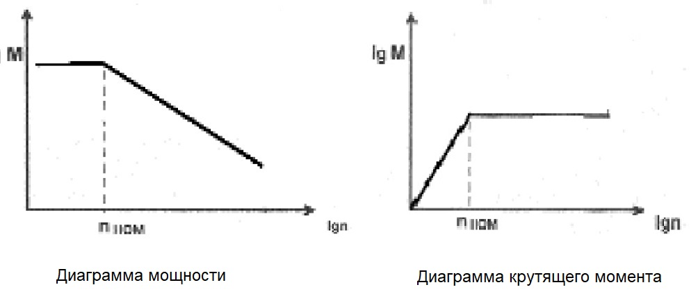

Говоря о силовых характеристиках, мы подразумеваем мощность и крутящий момент. Однако мы часто забываем о том, что мощность и момент резания напрямую зависят от режимов обработки. А также то, что силовые характеристики шпинделя зависят и от частоты вращения двигателя главного привода. Рассмотрим эти зависимости более подробно.
Из классической теории резания мощность обработки при точении и фрезеровании рассчитывается по формуле:
Pc = Kp · C · Q · W ;
где:
Kp - постоянный коэффициент, зависящий от обрабатываемого материала;
C - коэффициент подачи, зависящий от подачи;
Q - объем удаляемого материала, м3/сек;
W - коэффициент износа.
В свою очередь, объем удаляемого материала рассчитывается в зависимости от обработки:
Q=(V · f · d)/60 - для точения;
Q=(fm · w · d)/60000 - для фрезерования;
где:
V - скорость резания, м/мин;
f - подача, мм/об;
fm - подача, мм/мин;
d - диаметр обработки или диаметр инструмента, мм;
w - ширина фрезерования, мм
Для сверления крутящий момент резания рассчитывается по формуле:
M=(Kd · Kf · Fm · A · W)/40000.
Мощность определяется как:
Pc = (M · n)/9550;
где:
Pc - мощность резания, кВт;
М - момент, Нм;
Kd - коэффициент материала;
Ft - коэффициент подачи;
Fm - коэффициент момента;
A - коэффициент размера перемычки;
W - коэффициент износа;
n - частота вращения шпинделя, об/мин
Инструменту в процессе обработки детали для удаления стружки требуется рассчитанная по указанным формулам мощность. Усилия резания вызывают рассчитанный крутящий момент. Как видно из формул, силовые показатели инструмента меняются при изменении режимов резания. Значения для конкретных условий применения могут быть вычислены по формулам. Входящие в формулы коэффициенты могут быть взяты из справочников и каталогов фирм-производителей режущего инструмента. Кроме того, многие фирмы-производители и технологические фирмы распространяют электронные каталоги и специальное математическое обеспечение, позволяющее определить мощность и момент резания для конкретных режимов в конкретном случае применения.
Таким образом, со стороны режущего инструмента мы имеем определенные характеристики его мощности и момента, необходимые для удаления стружки при заданных условиях резания. Что же мы имеем со стороны станка?
В обработке резанием всем возникающим усилиям и нагрузкам противостоит станок в его различных элементах. Мощность резания и крутящий момент воспринимается механизмом главного движения станка. Можно сформулировать требования к главному приводу следующим образом.
Основная задача следящего привода главного движения заключается в преобразовании энергетического потока из сети в мощность резания и ее регулировании по оптимальным параметрам обработки, установленным системой управления.
Целью управления главным приводом является регулирование скорости резания в диапазонах, определяемых технологическими требованиями, предъявляемыми к металлорежущему станку. При этом подразумевается, что необходимо во всем диапазоне сохранять максимально возможную постоянную мощность и максимально возможный крутящий момент. К сожалению, выполнение этого условия практически невозможно, что обусловлено управлением двигателя главного привода.
В основной структуре главного движения любого станка различают две подсистемы: главный привод и механическую систему. Эти две части могут быть различной степени сложности и дополнять друг друга до полного совершенства системы. Простейшей системой главного привода является асинхронный неуправляемый двигатель переменного тока и коробка передач с переключаемыми ступенями. Изменение числа оборотов шпинделя осуществляется в этом случае ступенчато в соответствии с передаточными числами коробки. К достоинствам этой системы относится ее простота, сделавшая данную конструкцию классической. Однако такая система имеет ряд недостатков, к которым относится, в первую очередь, дискретность частот вращения (т. е. невозможность работы на оптимальной скорости резания) и необходимость переключать частоты при остановленном шпинделе. Все это привело к появлению в главных приводах регулируемых приводов, которые и применяются сегодня в абсолютном большинстве станков с ЧПУ. И вот тут и возникают сложности с сохранением постоянства мощности и момента на всем диапазоне.
Не вдаваясь в теорию электрических машин, попытаемся все же рассмотреть технику управления двигателями главного привода. На сегодняшний день в главных приводах используются два основных типа двигателей — постоянного тока и асинхронные переменного тока. Каждый из типов двигателя имеет свои преимущества и недостатки. К преимуществам двигателей постоянного тока относятся высокая динамика, простая лотка управления, высокий начальный крутящий момент, большой диапазон частот вращения и хорошее соотношение цена-возможности. К недостаткам надо отнести потребность в техническом обслуживании, низкую степень защиты и ограниченное число оборотов (до 6000 об/мин). Это по существу, устаревший тип двигателей, но имеющий по сей день широкое применение. Асинхронные двигатели переменного тока практически не требуют обслуживания, имеют высокую степень защиты, высокие частоты вращения (более 6000 об/мин), но в то же время более трудно управляемы при высокой стоимости блоков управпения. Современные тенденции обработки резанием, а именно: увеличение максимального числа оборотов до 12000 об/мин в стандартной комплектации, сокращение времени регулирования изменения частоты вращения, более высокие требования по разгону-торможению, увеличение диапазона частот вращения до 1:1000. выводят на передний план именно асинхронные двигатели переменного тока с цифровым управлением.
Одной из основных характеристик главного привода является номинальная частота вращения. Для нашего понимания силовых характеристик эта частота также очень важна. Она определяет границу между разнообразными способами управления двигателем. Хотя реализация управпения разными типами двигателей различна, подход к разным типам двигателей постоянен и приводит к одинаковому изменению силовых характеристик в зависимости от частоты вращения двигателя.
Для двигателя постоянного тока частота вращения пропорциональна напряжению на якоре и обратно пропорциональна потоку возбуждения:
nдвиг ∼ Uя / Фв
При разгоне двигателя из состояния покоя до достижения номинальной частоты вращения увеличение скорости достигается за счет увеличения напряжения на якоре. Максимально возможное напряжение (ограниченное коммутационными способностями двигателя) соответствует номинальной частоте вращения. После номинальной частоты увеличение скорости вращения достигается за счет уменьшения потока возбуждения. Максимальная частота вращения определяется границей токопроводности коллектора и щеток.
Крутящий момент пропорционален току якоря и величине потока возбуждения:
Mдвиг ∼ Iя · Фв
Мощность пропорциональна крутящему моменту и частоте вращения (в конечном виде току якоря и напряжению на якоре):
Pдвиг ∼ Mдвиг · nдвиг · Iя · Uя
Из этих зависимостей следует, что в первой зоне регулирования частоты вращения, при увеличении напряжения на якоре и неизменном потоке возбуждения, крутящий момент остается неизменным и максимальным для данного двигателя, а мощность увеличивается пропорционально частоте вращения.
Во второй зоне уменьшение потока возбуждения приводит к пропорциональному уменьшению крутящего момента, оставляя мощность неизменной (так как ток и напряжение якоря не меняются). Наглядно это представлено на диаграммах для мощности и для крутящего момента . Для того чтобы перекрыть весь диапазон частот вращения, мощности и момента, график изображается в логарифмических координатах.
Для двигателя переменного тока при постоянном проскальзывании крутящий момент пропорционален напряжению на статоре и обратно пропорционален частоте тока статора. Ток статора нелинейно зависит от проскальзывания и от нагрузки. Кстати, именно поэтому управление таким двигателем представляет непростую задачу и реализуется в основном в цифровых приводах с микропроцессорным управлением. Мощность также пропорциональна моменту и числу оборотов шпинделя. В первой зоне управления частотой вращения (до номинальной частоты вращения) увеличение числа оборотов происходит за счет управления напряжением на статоре при поддержании постоянного проскальзывания. В результате, аналогично двигателю постоянного тока, крутящий момент остается постоянным и максимальным зависящим от токовой отсечки в преобразователе. Мощность увеличивается от нуля пропорционально частоте вращения и достигает максимума при достижении номинальной частоты вращения. Во второй зоне двигатель управляется уменьшением потока возбуждения за счет изменения проскальзывания и крутящего момента при неизменном напряжении. Крутящий момент уменьшается при увеличении числа оборотов, мощность остается постоянной и максимальной. Результат абсолютно аналогичен представленному на графиках 1 и 2.
Можно сделать вывод: указанные в технических характеристиках станка значения мощности и момента относятся только к одной частоте вращения двигателя главного привода - номинальной. На частотах вращения ниже номинальной мощность пропорциональна частоте вращения при постоянном крутящем моменте. На частотах вращения выше номинальной мощность постоянна, а крутящий момент уменьшается пропорционально частоте вращения.